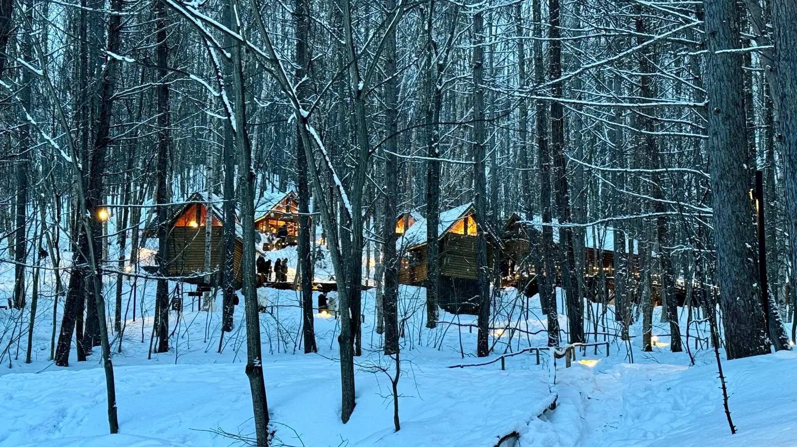

000 000-0000 Site de démonstration
Haute-Côte-Nord, Québec
Auberge de l’Anse-à-Givre
Vingt-deux chambres devant l’anse qui prend en glace. Une seule tablée le soir, à dix-huit heures trente.
Les dates libres
000 000-0000 Site de démonstration
Haute-Côte-Nord, Québec
Vingt-deux chambres devant l’anse qui prend en glace. Une seule tablée le soir, à dix-huit heures trente.
Les dates libres